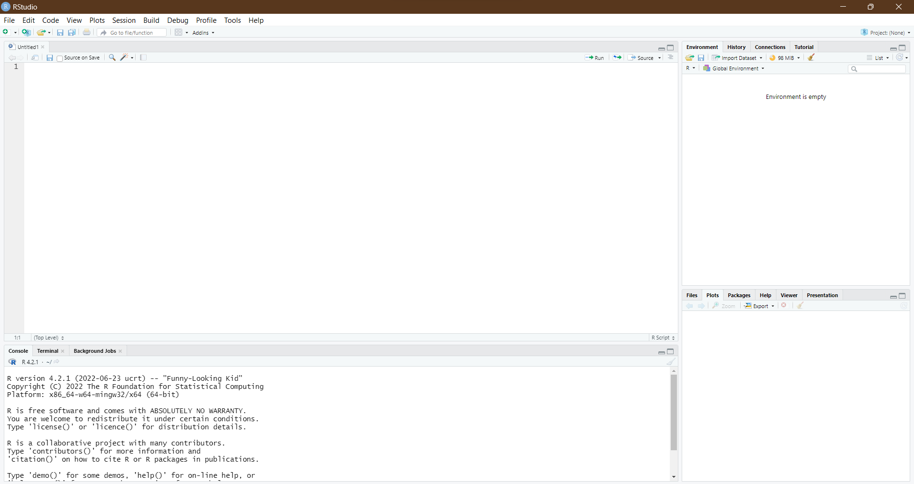
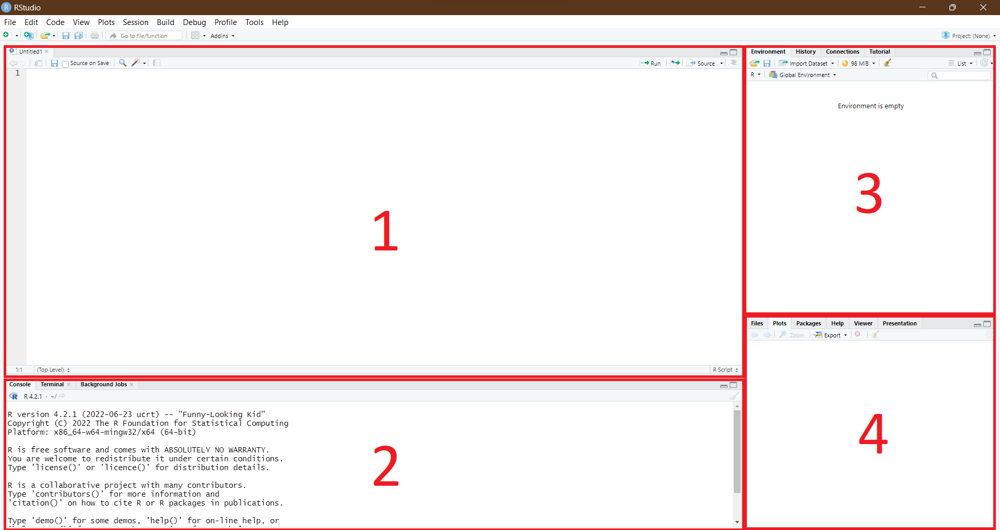
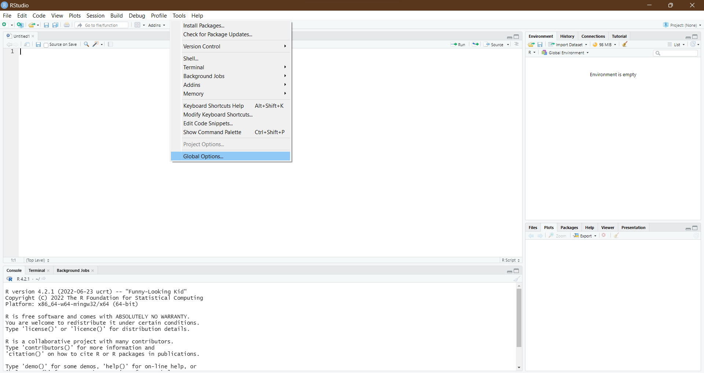
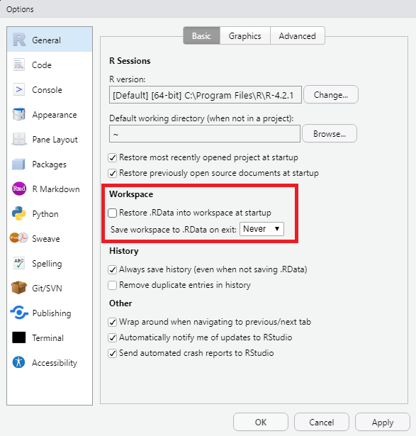
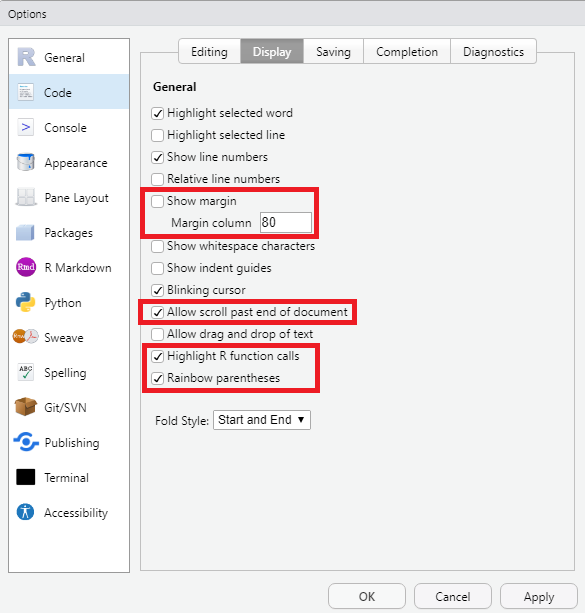
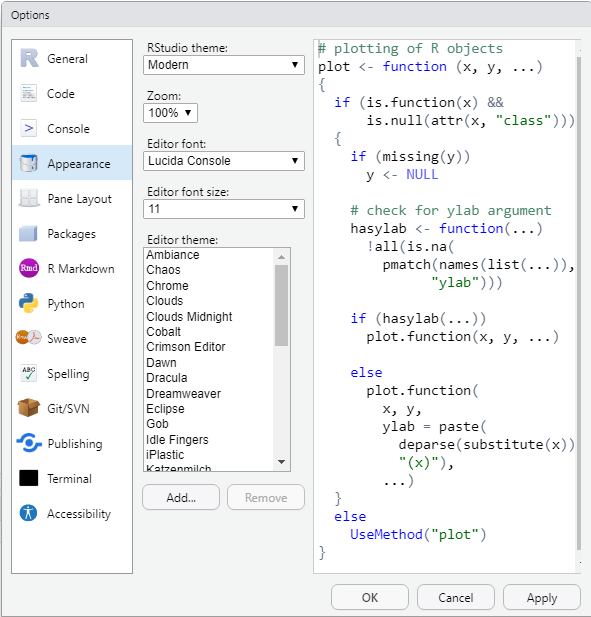

RStudio
Installing the RStudio IDE
One of the most popular IDEs for R is RStudio, developed by Posit. RStudio is an especially great IDE for R because it was developed specifically with R in mind. Although other IDEs exist, these are often more general, meaning there is functionality that is not relevant to R, or that there are implementations missing that could greatly benefit R users. Additionally, if you are ever interested in working with Python, RStudio also supports Python, as well as integration of Python and R into the same document.
RStudio can be downloaded from https://posit.co/download/rstudio-desktop/. You have already downloaded R in the previous section so you can immediately go to step two and download RStudio desktop.
Finding your way around RStudio
Now let’s see what RStudio offers us compared to the graphical user interface of R itself. When we open RStudio, Figure 1 shows what we see:

Interface
First, let’s see what each section in the RStudio window, as numbered in Figure 2, means.
The first section is the script. In the script is where you will write most of your code. Scripts are text files that are saved on your device and you can load in later, meaning any code you write you can reuse later, without writing it again.
The second section is the console. Any code you run in the script will show its output in the console. Additionally, if you quickly want to see the output of some code, you can write it in the console instead of the script (but it won’t be saved then).
The third section is the global environment. Any data you create wil show up in here and from here you can inspect the data and details related to the data.
The fourth section contains multiple tabs, of which many are relevant to any R user.
- The first tab is the ‘Files’ tab. When you are working on some code in R, it is possible to determine from where files are loaded and where files are saved by default. This location is automatically opened in the ‘Files’ tab, from where you can inspect the location and load any files by hand.
- The second tab is the ‘Plots’ tab. Whenever you create a plot (i.e., figure) in R, it will show up in this tab, so that you can visually inspect whether you like it before exporting it.
- In the third tab, ‘Packages’, you can find all Packages (more on those later) you have installed and see which ones are loaded. Additionally, you can update packages from this tab.
- The ‘Help’ tab, the fourth of the tabs available, allows you to search for functions and packages and helps you understand how they work and how to enter data into them to obtain the desires results.
- The last tab of interest for now, the ‘Viewer’ tab, allows you to view created documents. Sometimes, R allows you to documents, such as HTML documents (of which we will see an example later on), which can then be visually inspected in the viewer before export.

These are all the important sections and tabs any RStudio user should know about. Don’t worry if you don’t immediately understand or remember what the windows do or represent. Throughout the tutorial, they will come back and through practice you will get a good understanding of what you see in your RStudio window.
Settings
Second, let’s highlight some good settings that can ease your programming in R. The settings I will highlight here are my personal preference and in no way something you must adhere to, but it is good to know that they exist and that get an idea of the extent to which you can personalize the way RStudio works for you.
To open the settings, you can go to ‘Tools’ in the menu bar at the top of the screen, and select ‘Global options’ in the drop-down menu, shown in Figure 3.

Saving the workspace
A first setting I want to highlight is saving the workspace. By default, when you exit RStudio, RStudio will ask you whether you want to save the workspace. The saved workspace will then be restored upon re-opening R. In other words, any data you created and loaded in would be saved upon quitting RStudio and loaded back in when you start RStudio again. Although this may sound useful, it also means that all data you create needs to be removed manually. This can quickly cause problems with memory and the speed of R and your device. Therefore I suggest that under ‘General’ you remove the tick from ‘Restore .RData into workspace at startup’ and set Save workspace to .RData on exit to Never as seen in Figure 4.

Code display
To make our code a bit more readable, I suggest changing a few settings under the section ‘Code’ in the tab ‘Display’ as seen in Figure 5. I prefer changing the following settings regarding my code display:
Margin: by default, the scripts in R show a margin (a vertical line) on the right of a code. This can help you style your code width if you use RStudio on different devices with different screen widths. Personally, I like to turn the margin off by removing the tick from ‘Show margin’.
Scrolling past end: when you write a code in a script, you can scroll to the end of the script, but not further, However, personally I prefer to have the code that I am looking at be in the middle of the screen. By ticking ‘Allow scroll past end of document’, I can keep scrolling after the code finishes to center the code in the window.
Highlight functions: in R, we can calculate many things using functions (more on this later). However, these normally are the same colour as the rest of your code. I prefer to highlight functions to increase readability. You can do this by ticking ‘Highlight R function calls’.
Rainbow parentheses: many of the code that is written in R uses parentheses: (). However, many parentheses within each other might become very confusing: (((()))). Although R highlights the corresponding parenthesis, I find it helpful to additionally colour corresponding parentheses the same colour, while non-corresponding parentheses are coloured different. You can do this by ticking ‘Rainbow parentheses’.

RStudio appearance
When working in RStudio, I prefer the screen to not be too bright. Additionally, I modified the way the code looks to my own preferences. You can try what works best for you under ‘Appearance’ (Figure 6).

Next topic
With both R and RStudio set-up, let’s start using R.